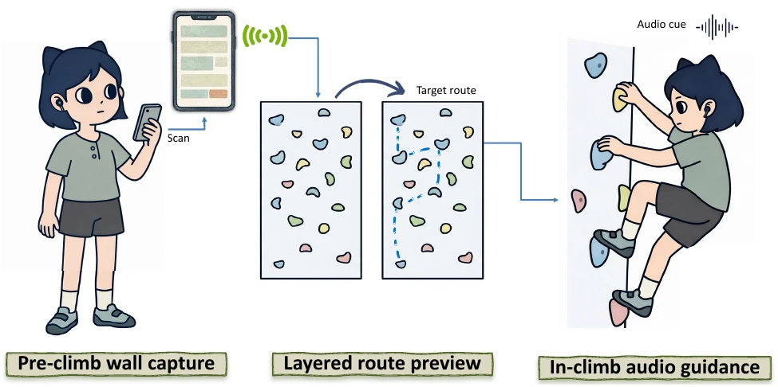

To appear at ACM ASSETS 2026
HoldLight: Making Indoor Climbing More Accessible for Blind and Low-Vision Climbers through Layered Route Preview and Real-Time Next-Hold Guidance
HoldLight combines layered pre-climb route previews and real-time next-hold audio guidance to support blind and low-vision climbers, with explicit fallback when the system is uncertain.